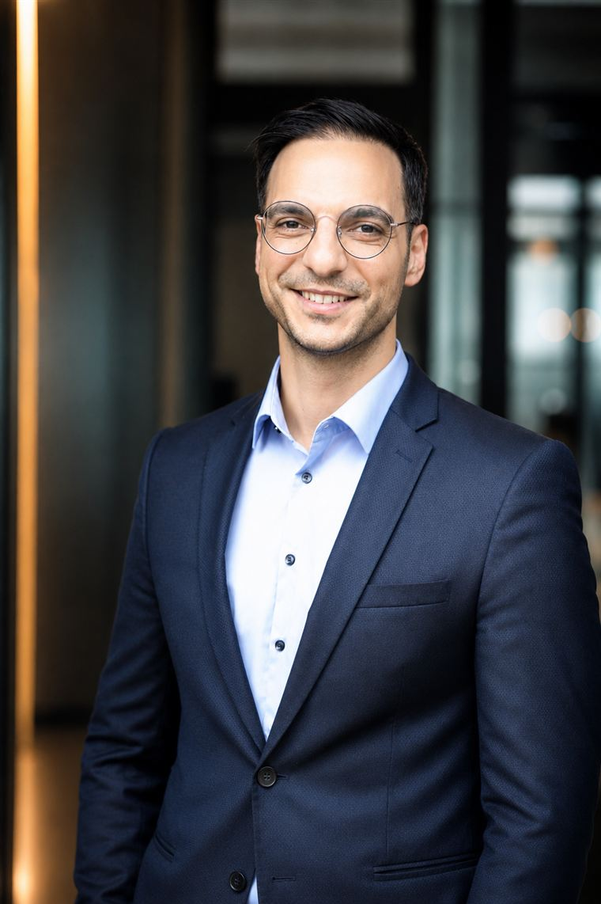

Personalberatung für TGA & Bau
Spitzenkräfte für TGA und Bau.
Seit 2011 nichts anderes.
YSC besetzt Fach- und Führungspositionen in der Technischen Gebäudeausrüstung und im Bau — vom Systemplaner bis zur Geschäftsführung. Wir finden diese Menschen nicht über Stellenbörsen, sondern über ein persönlich gewachsenes Netzwerk. Diskret, verbindlich und auf Augenhöhe mit der Branche.
Warum YSC
Generalisten besetzen alles ein bisschen Wir besetzen ein Feld. Richtig.
Spezialisierung statt Bauchladen
Seit 2011 Personalberatung, ein einziges Feld: Bau und Technik. Als Managing Director hat Yavuz Senol die Fachabteilungen TGA und Hochbau/Schlüsselfertigbau einer renommierten Beratung geführt: über 350 Besetzungen und ein tiefes Verständnis dafür, welche Profile wirklich liefern.
Direktansprache statt Anzeigenflut
Die besten Leute suchen nicht. Sie werden gefunden. Wir sprechen gezielt an, wer fachlich und menschlich passt. Persönlich, nicht per Massenmail.
Diskretion als Prinzip
Kein Profil verlässt das Haus ohne Freigabe. Mitarbeiter unserer Auftraggeber sind für uns tabu. Vertraulichkeit ist bei uns keine Floskel, sondern Systemregel.
Leistungen
Drei Wege, ein Anspruch
Wir beraten mit Substanz — auf beiden Seiten des Tisches: für Unternehmen und für Kandidaten.
Executive Search
Wir besetzen Führungspositionen — von der Niederlassungs- über die Bereichs- bis zur Geschäftsleitung. Dabei arbeiten wir mit systematischer Marktanalyse, verdeckter Ansprache und einem strukturierten Auswahlprozess.
- Geschäftsführung & Niederlassungsleitung
- Bereichs-, Abteilungs- & technische Leitung
- Vertrauliche Mandate & Nachfolgen
Personalvermittlung
Wir vermitteln Festanstellungen im Fach- und Projektbereich: Projektleitung, Bauleitung, Fachplanung und Kalkulation. Vorgestellt wird nur, wen wir selbst einstellen würden — im Schnitt sind das zwei bis drei Kandidaten je Position.
- Projekt- & Bauleitung, Objektüberwachung
- Fachplanung, Kalkulation, Systemplanung
- Kurze Besetzungszeiten durch das bestehende Netzwerk
Karriereberatung
Kandidaten erhalten von uns eine ehrliche Einordnung von Marktwert, Gehalt und Perspektive — auch dann, wenn das Ergebnis lautet: „Bleiben Sie, wo Sie sind." Wer wechselt, soll es aus guten Gründen tun.
- Marktwert- & Gehaltseinschätzung
- Diskrete Sondierung ohne Zugzwang
- Begleitung bis nach der Probezeit
So arbeiten wir
Vom Briefing zur Besetzung
Ein klarer Prozess, den Sie jederzeit nachvollziehen können — strukturiert, transparent und mit festen Meilensteinen.
Briefing
Wir klären gemeinsam, wen Sie wirklich brauchen: Anforderungsprofil, Team, Projektlandschaft und Gehaltsmodell — vor Ort oder per Video.
Active Sourcing
Wir sprechen passende Kandidaten gezielt und direkt an — aus dem eigenen Netzwerk und über systematische Marktrecherche.
Qualifizierung
Fachliche und persönliche Eignung prüfen wir im strukturierten Gespräch. Dabei hilft uns, dass wir die Gewerke aus langjähriger Praxis kennen.
Shortlist
Sie erhalten eine kleine, belastbare Auswahl mit ehrlicher Einschätzung — einschließlich der Punkte, die kritisch werden könnten.
Closing & Onboarding
Wir begleiten Vertragsphase, Kündigung und Antritt — und bleiben auch nach dem Start Ansprechpartner für beide Seiten.
Fachgebiete
Zu Hause in sechs Gewerken
Wir besetzen die Disziplinen, deren Sprache wir sprechen — vom Ingenieurbüro bis zum Rechenzentrums-Projekt.
Heizung · Lüftung · Sanitär
Vom Fachplaner bis zur Abteilungsleitung: das Kerngewerk der TGA und unser Ursprung.
Elektrotechnik
Stark- und Schwachstrom, Energie- und Gebäudetechnik, in Planung wie Ausführung.
Gebäudeautomation
MSR-Technik und Gebäudeautomation: das Gewerk mit dem größten Fachkräfte-Engpass.
Kälte- & Klimatechnik
Kältetechnik, Klimasysteme, Wärmepumpen: Spezialisten für ein Feld im Umbruch.
Brandschutz & Sprinkler
Anlagentechnischer Brandschutz: kleines Feld, hohe Verantwortung, rare Profile.
TGA-Gesamtplanung
Ingenieurbüros und Generalplaner: BIM, technische Systemplanung, Projektsteuerung.
Für Unternehmen
Eine Schlüsselposition ist offen? Sprechen Sie mit uns.
Jede unbesetzte Projektleiterstelle kostet laufende Projekte, Termine und Geld. Wir besetzen sie mit Kandidaten, die ihr Handwerk aus der Praxis kennen und vom ersten Tag an produktiv sind.
- Direktansprache aus einem Netzwerk von über 3.500 Kontakten
- Persönliche Vorauswahl durch Branchenkenner
- Abwerbeschutz: Ihre Mitarbeiter sind für uns tabu
Oder direkt: +49 221 955 8294‑0 · info@senolconsulting.de
Für Kandidaten
Sie müssen nicht suchen, um offen zu sein.
Ein Gespräch mit uns ist keine Bewerbung, sondern eine ehrliche Einordnung: Was sind Sie wert, was ist am Markt möglich, und lohnt sich ein Wechsel überhaupt?
- Absolute Diskretion: kein Profil ohne Ihre Freigabe
- Ehrliche Gehalts- und Marktwerteinschätzung
- Zugang zu Positionen, die nie ausgeschrieben werden
Oder gleich stöbern: aktuelle Positionen ansehen →
Über YSC
Seit 2011: ein Beruf, ein Fachgebiet
Bei YSC ist Ihr Mandat Chefsache: keine wechselnden Berater, keine Übergaben, volle Verbindlichkeit von der ersten Analyse bis zur Vertragsunterschrift.

„Ich habe hunderte Besetzungen in TGA und Bau verantwortet, als Berater und als Managing Director zweier Fachabteilungen. Ich weiß, welche Lebensläufe glänzen und welche Menschen liefern. Diesen Unterschied zu erkennen: Das ist mein Beruf."
Projektleiter, internationale Personalberatung
Recruiting-Handwerk auf internationalem Niveau: Search-Mandate, Auswahl, Prozessführung.
Senior Consultant, spezialisiert auf Bau & Technik
Wechsel in die Spezialisierung bei Look & Graffelder, Köln: Fach- und Führungspositionen in TGA und Bau, das Feld, das bis heute den Kern von YSC bildet.
Managing Director: Abteilungen TGA & Hochbau/Schlüsselfertigbau
Führung zweier Fachabteilungen bei Look & Graffelder: Teams, Mandate, Umsatzverantwortung.
YSC Senol Consulting, Köln
Die eigene Beratung: die gesamte Erfahrung seit 2011, gebündelt auf ein Versprechen: die richtige Besetzung.
Jobbörse
Aktuelle Positionen
Projektleitung, Bauleitung, Fachplanung und Führungspositionen — laufend aktualisiert. Viele Positionen besetzen wir verdeckt: Wenn nichts Passendes dabei ist, lohnt sich ein Gespräch trotzdem.
Kontakt
Sprechen wir — diskret, konkret, auf Augenhöhe
Ob konkreter Personalbedarf oder eine vertrauliche Karrierefrage — ein unverbindliches Erstgespräch schafft Klarheit.